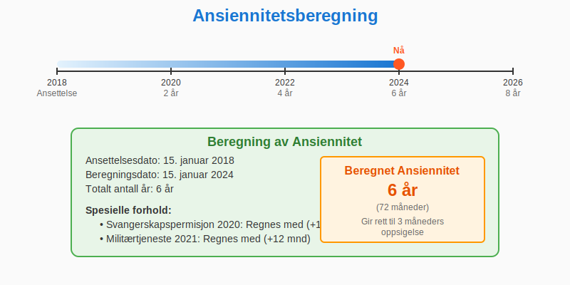
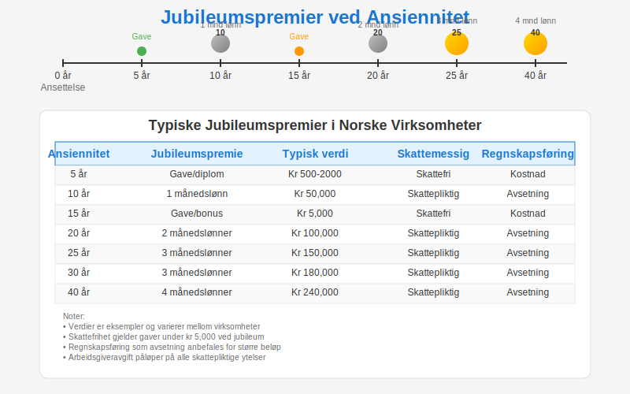

Ansiennitet er et grunnleggende konsept i norsk arbeidsrett og regnskapsføring som beskriver hvor lenge en ansatt har vært tilknyttet en virksomhet. Dette har omfattende juridiske, økonomiske og regnskapsmessige konsekvenser for både arbeidsgiver og arbeidstaker.
Hva er Ansiennitet?
Ansiennitet refererer til den akkumulerte tiden en ansatt har vært i stilling hos samme arbeidsgiver, og danner grunnlaget for en rekke rettigheter, ytelser og forpliktelser.
Ansiennitet er ikke bare en enkel tidsberegning, men et komplekst juridisk og regnskapsmessig konsept som påvirker:
- Lønnsnivå og lønnsøkninger (se Gjennomsnittslønn i Norge)
- Pensjonsopptjening og pensjonsberegning
- Ferie- og fridagsrettigheter
- Oppsigelsesfrister og avgangsvilkår
- Sluttvederlag og fratredelsesytelser
- Ansiennitetspremier og tillegg
Juridisk Grunnlag for Ansiennitet
Ansiennitet er regulert gjennom flere juridiske kilder:
Arbeidsmiljøloven
Arbeidsmiljøloven § 15-3 regulerer oppsigelsesfrister basert på ansiennitet:
| Ansiennitet | Oppsigelsestid |
|---|---|
| Under 6 måneder | 1 måned |
| 6 måneder–2 år | 2 måneder |
| 2–5 år | 3 måneder |
| Over 5 år | 4 måneder |
Tariffavtaler
Tariffavtaler kan gi utvidede rettigheter basert på ansiennitet:
- Høyere feriepengesats (12,5% i stedet for 10,2%)
- Ekstra feriedager ved lang tjenestetid
- Ansiennitetstillegg og lønnstrinn
- Bedre pensjonsordninger
Ferieloven
Ferieloven gir rettigheter som øker med ansiennitet:
- Rett til ferie etter 12 måneder
- Ansiennitetspremier ved jubileum
- Særlige regler for sykdom under ferie
Beregning av Ansiennitet
Grunnleggende Beregning
Ansiennitet beregnes fra første arbeidsdag til aktuell dato. Viktige prinsipper:
- Regnes i fulle år for de fleste formål
- Sammenhengende ansettelse er hovedregelen
- Permisjon og sykdom regnes vanligvis med
- Militærtjeneste regnes med hvis den avbryter ansettelsen

Spesielle Beregningsregler
Virksomhetsoverdragelse
Ved virksomhetsoverdragelse (jf. arbeidsmiljøloven § 16) overføres ansiennitet til ny arbeidsgiver:
- Full ansiennitet fra opprinnelig ansettelsesdato
- Rettigheter og forpliktelser følger med
- Ny arbeidsgiver overtar alle ansiennitetsbetingede ytelser
Konsernforhold
I konsernforhold kan ansiennitet beregnes på ulike måter:
- Konsernansiennitet: Samlet tjeneste i hele konsernet
- Selskapsansiennitet: Kun tjeneste i aktuelt selskap
- Tariffavtaler kan gi spesielle regler
Avbrudd i Ansettelsen
Hvis ansettelsen avbrytes og gjenopptas:
- Kort avbrudd (under 6 måneder): Ansiennitet beholdes
- Langt avbrudd (over 6 måneder): Ny ansiennitetsberegning
- Tariffavtaler kan gi gunstigere regler
Ansiennitet og Lønn
Lønnstrinn og Ansiennitetstillegg
Mange virksomheter opererer med lønnstrinn basert på ansiennitet:
| Ansiennitet | Lønnstrinn | Typisk økning |
|---|---|---|
| 0–2 år | Trinn 1-3 | 2-4% |
| 2–5 år | Trinn 4-8 | 3-5% |
| 5–10 år | Trinn 9-15 | 4-6% |
| 10+ år | Trinn 16+ | 5-8% |
Regnskapsføring av Ansiennitetstillegg
Ansiennitetstillegg føres som:
Debet: Lønnskostnad (5000-serien)
Kredit: Lønn til utbetaling (2400-serien)
Jubileumspremier
Mange virksomheter gir jubileumspremier ved milepæler:
- 10 års jubileum: 1-2 månedslønn
- 25 års jubileum: 2-3 månedslønn
- 40 års jubileum: 3-4 månedslønn

Regnskapsføring av Jubileumspremier
Avsetning for fremtidige jubileumspremier:
Debet: Lønnskostnad (5000)
Kredit: Avsetning jubileumspremier (2700)
Utbetaling av jubileumspremie:
Debet: Avsetning jubileumspremier (2700)
Kredit: Lønn til utbetaling (2400)
Ansiennitet og Pensjon
Tjenestepensjon
Ansiennitet er avgjørende for pensjonsopptjening:
- Opptjeningstid: Minimum 3 års ansiennitet for rett til tjenestepensjon
- Opptjeningsgrunnlag: Øker med ansiennitet
- Pensjonsalder: Kan påvirkes av lang tjenestetid
Pensjonsopptjening etter Ansiennitet
| Ansiennitet | Opptjeningsrate | Maksimal pensjon |
|---|---|---|
| 3–10 år | 2,0% per år | 20% |
| 10–20 år | 2,5% per år | 45% |
| 20–30 år | 3,0% per år | 75% |
| 30+ år | 3,5% per år | 100% |
Regnskapsføring av Pensjonskostnader
Årets pensjonskostnad beregnes basert på ansiennitet:
Debet: Pensjonskostnad (5140)
Kredit: Pensjonsforpliktelser (2900)
Se mer om Tjenestepensjon for detaljerte regler.
Ansiennitet og Feriepenger
Grunnleggende Feriepengeberegning
Alle ansatte har rett til feriepenger uavhengig av ansiennitet:
- Hovedregel: 10,2% av feriepengeberegnet lønn
- Arbeidere: 12% av feriepengeberegnet lønn
- Ansiennitetstillegg: Kan gi høyere sats
Ansiennitetsbetingede Ferierettigheter
Ekstra Feriedager
Noen tariffavtaler gir ekstra feriedager basert på ansiennitet:
| Ansiennitet | Feriedager | Ekstra dager |
|---|---|---|
| 0–5 år | 25 dager | 0 |
| 5–10 år | 25 dager | 1 |
| 10–15 år | 25 dager | 2 |
| 15+ år | 25 dager | 3 |
Særlige Feriepengesatser
Langvarig ansatte kan ha rett til høyere feriepengesats:
- 10+ års ansiennitet: 12,5% (i stedet for 10,2%)
- 20+ års ansiennitet: 15% (i enkelte tariffavtaler)
Regnskapsføring av Feriepenger
Ordinære feriepenger:
Debet: Feriepengekostnad (5300)
Kredit: Skyldig feriepenger (2420)
Ansiennitetstillegg feriepenger:
Debet: Feriepengekostnad ansiennitet (5310)
Kredit: Skyldig feriepenger ansiennitet (2421)
Se mer om Feriepenger for fullstendige regler.
Ansiennitet ved Oppsigelse og Avgang
Oppsigelsesfrister
Arbeidsmiljøloven § 15-3 fastsetter minimumsfrister basert på ansiennitet:
| Ansiennitet | Oppsigelsesfrist fra arbeidsgiver | Oppsigelsesfrist fra arbeidstaker |
|---|---|---|
| Under 6 måneder | 1 måned | 14 dager |
| 6 måneder–2 år | 2 måneder | 1 måned |
| 2–5 år | 3 måneder | 1 måned |
| Over 5 år | 4 måneder | 1 måned |
Sluttvederlag
Ved langt ansettelsesforhold kan det gis sluttvederlag:
- 10+ års ansiennitet: 1-3 månedslønn
- 20+ års ansiennitet: 3-6 månedslønn
- 30+ års ansiennitet: 6-12 månedslønn
Regnskapsføring av Sluttvederlag
Avsetning for sluttvederlag:
Debet: Personalbehandling (5900)
Kredit: Avsetning sluttvederlag (2750)
Utbetaling av sluttvederlag:
Debet: Avsetning sluttvederlag (2750)
Kredit: Lønn til utbetaling (2400)
Alderspensjon og Ansiennitet
Ved alderspensjon påvirker ansiennitet:
- Pensjonsalder: Kan senkes ved lang tjenestetid
- Pensjonsnivå: Øker med ansiennitet
- Overgangsordninger: Spesielle regler for langvarig ansatte
Spesielle Ansiennitetsordninger
Offentlig Sektor
Offentlig sektor har spesielle ansiennitetsregler:
- Stillingsvern: Sterkere ved lang ansiennitet
- Lønnsrammer: Automatisk progresjon basert på ansiennitet
- Pensjonsordninger: Særlige regler for statstilsatte
Privat Sektor
Privat sektor har mer fleksible ansiennitetsordninger:
- Tariffavtaler: Fastsetter spesifikke rettigheter
- Individuelle avtaler: Kan gi bedre vilkår
- Bedriftspensjon: Varierer mellom virksomheter
Internasjonale Ansettelser
Ved internasjonale ansettelser må man vurdere:
- Norske regler: Gjelder ved ansettelse i Norge
- Utlandske regler: Kan gi andre rettigheter
- Konsernregler: Spesielle ordninger for konsernansatte
Dokumentasjon og Oppbevaring
Nødvendig Dokumentasjon
For å dokumentere ansiennitet må følgende oppbevares:
- Ansettelseskontrakter med ansettelsesdato
- Permisjonsvedtak og sykmeldinger
- Lønns- og personalregistre
- Tariffavtaler og regelverksendringer
Oppbevaringsplikt
Personaldokumenter må oppbevares i minst 5 år etter ansettelsens slutt. For pensjonsrelaterte dokumenter gjelder 50 års oppbevaringsplikt.
Digitale Systemer
Moderne lønns- og personalsystemer kan:
- Automatisk beregne ansiennitet
- Varsle om jubileum og rettigheter
- Integrere med regnskapssystemer
- Dokumentere alle endringer
Internasjonale Perspektiver
EU-regler
EU-direktivet om arbeidsvilkår påvirker ansiennitetsregler:
- Virksomhetsoverdragelse: Ansiennitet skal overføres
- Diskrimineringsforbud: Ansiennitet kan ikke diskriminere
- Arbeidstid: Ansiennitet påvirker ferierettigheter
Nordiske Sammenligninger
| Land | Maksimal oppsigelsesfrist | Feriepengesats | Pensjonssystem |
|---|---|---|---|
| Norge | 4 måneder | 10,2%/12% | 2-pilarsystem |
| Sverige | 6 måneder | 12% | ATP-system |
| Danmark | 6 måneder | 12,5% | Folkepensjon |
| Finland | 6 måneder | 11,5% | Arbeidspenjon |
Fremtidige Utviklingstrekk
Demografiske Endringer
Befolkningsutvikling påvirker ansiennitetsregler:
- Aldring: Lengre arbeidskarrierer
- Mobilitet: Hyppigere jobbytte
- Kompetanse: Fokus på kvalifikasjoner fremfor ansiennitet
Teknologiske Endringer
Digitalisering påvirker ansiennitetssystemer:
- Automatisering: Enklere beregning og administrasjon
- Integrering: Bedre sammenheng mellom HR og regnskap
- Analyse: Bedre prognoser for personalkostnader
Arbeidsmarkedsendringer
Nye arbeidsformer utfordrer tradisjonelle ansiennitetsmodeller:
- Prosjektansettelser: Kortere ansettelsesforhold
- Fleksibilitet: Mindre fokus på fast ansettelse
- Kompetansemobilitet: Belønning basert på ferdigheter
Praktiske Råd for Virksomheter
Utforming av Ansiennitetspolitikk
- Kartlegg gjeldende tariffavtaler og lovkrav
- Definer klare ansiennitetstrinn og rettigheter
- Integrer med lønns- og personalsystemer
- Kommuniser tydelig til ansatte
- Evaluer regelmessig kostnadsutviklingen
Regnskapsmessige Tiltak
- Avsetninger: Beregn fremtidige jubileumspremier
- Budsjetting: Inkluder ansiennitetskostnader
- Rapportering: Separate ansiennitetskostnader
- Kontroll: Regelmessig oppfølging av rettigheter
Risikostyring
- Kostnadskontroll: Overvåk ansiennitetsdrevne kostnader
- Juridisk compliance: Sikre etterlevelse av regler
- Dokumentasjon: Oppretthold fullstendig dokumentasjon
- Forsikring: Vurder ansiennitetsrelaterte risikoer
Relaterte Regnskapsmessige Konsekvenser
Årsoppgjør
I årsoppgjøret må følgende vurderes:
- Avsetninger for fremtidige jubileumspremier
- Pensjonsforpliktelser basert på ansiennitet
- Feriepengereserve inkludert ansiennitetstillegg
- Sluttvederlag for langtidsansatte
Budsjetting og Prognoser
Ansiennitet må inkluderes i:
- Lønnsbudsjettet for neste år
- Langsiktige prognoser for personalkostnader
- Pensjonskostnader over tid
- Organisasjonsutvikling og kompetansehevning
Skattemessige Konsekvenser
Ansiennitetstillegg og jubileumspremier har spesielle skatteregler:
- Lønnsfradrag: Ordinært fradrag for virksomheten
- Arbeidsgiveravgift: Påløper på alle ytelser
- Skattlegging: Ordinær skattlegging for arbeidstaker
Se mer om Arbeidsgiveravgift for detaljerte regler.
Konklusjon
Ansiennitet er et komplekst og omfattende konsept som påvirker mange aspekter av arbeidsforholdet og regnskapsføringen. Korrekt håndtering av ansiennitet krever:
- Juridisk forståelse av relevante lovbestemmelser
- Regnskapsmessig kompetanse for korrekt føringsm
- Systemstøtte for effektiv administrasjon
- Kontinuerlig oppfølging av rettigheter og kostnader
Virksomheter som implementerer gode ansiennitetssystemer vil kunne:
- Redusere juridisk risiko
- Forbedre ansattlojalitet
- Optimalisere personalkostnader
- Sikre compliance med regelverk
Relaterte Artikler
- Les mer om Grunnlønn for sammenhengen mellom ansiennitet og lønn
- Se Feriepenger for hvordan ansiennitet påvirker feriepengesatser
- Utforsk Tjenestepensjon for ansiennitetsbetingede pensjonsrettigheter
- Les om Arbeidsgiveravgift for avgift på ansiennitetstillegg
- Se Lønn for generelle lønnsbestemmelser
Ansiennitet er et sentralt element i norsk arbeidsrett og regnskapsføring. Sikre korrekt håndtering gjennom god planlegging, systemstøtte og kontinuerlig oppfølging av regelverksendringer.